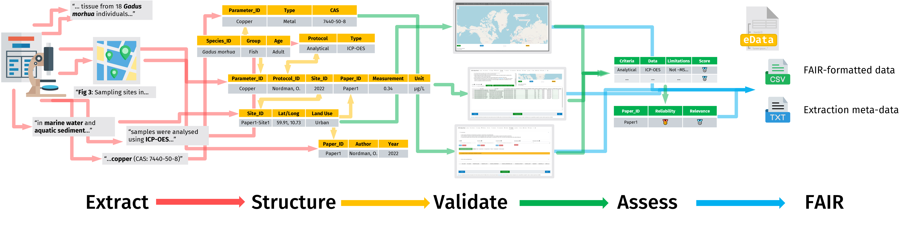

STOPeData (“eData”) is a data entry and formatting Shiny application (app) in the Source to Outcome Pathway/Risk Assessment Database family, designed to make extracting data on chemical concentrations in the environment from papers and reports easier.
🖥️ Test Version (NIVA login required) · 🖥️ Prod (Login required) · 🪲 Report Bug · ❔Request Feature
About The Project

This app is designed to guide users through the formatting, cleaning and annotation of exposure/pollution/monitoring data (e.g. mg/L of a chemical in an environmental matrix). Published studies and reports are an important source of this data, but it is often fragmented and difficult to analyse without extensive data cleaning and transformation. By assisting and automating this step, we hope to make exposure assessment - and therefore the risk assessment of chemicals in the environment - as easy as possible.
This app is part of the Source to Outcome Pathway/Risk assessment database family of R Shiny apps, and provides one-half of the data necessary for environmental risk assessment. Its counterpart for toxicity/bioassay data is STOP qData. Environmental risk predictions can be viewed at the Source To Outcome Predictor.
Getting Started
Installation
(Optional) Get an API key for LLM data extraction (Anthropic/OpenAI/Google Gemini), and Zenodo/Zenodo Sandbox tokens for uploading to Zenodo.
-
Clone the repo, or install from GitHub:
pak::pak("NIVANorge/STOPeData") -
Install the companion schema package and the remaining dependencies:
pak::pak("NIVANorge/eDataDRF") # companion schema package, must be installed separately pak::local_install_deps() # or source dependencies.R for the full list -
(Optional) Enter your API keys/tokens in your
.Renvironfile: -
If you’re developing on a fork, point
originat it to avoid accidental pushes to the base project: -
Run the app locally (or use Docker):
Roadmap
See the open issues for a full list of proposed features (and known issues).
Acknowledgments
- Project Lead: Knut Erik Tollefsen
- Funding: EXPECT, PARC, and NCTP Projects
- Testers: Li Xi, Knut Erik Tollefsen, Sophie Mentzel, Pierre Blévin, Camden Karon Klefbom
- Support and Advice: Viviane Giradin, Andrea Merlina, Kim Leirvik, Jemmima Knight, Malcolm Reid
- LLMs were used in the creation of this app and its code.
- Readme template repo: Best-README-Template
- (If I’ve left you off please let me know!)